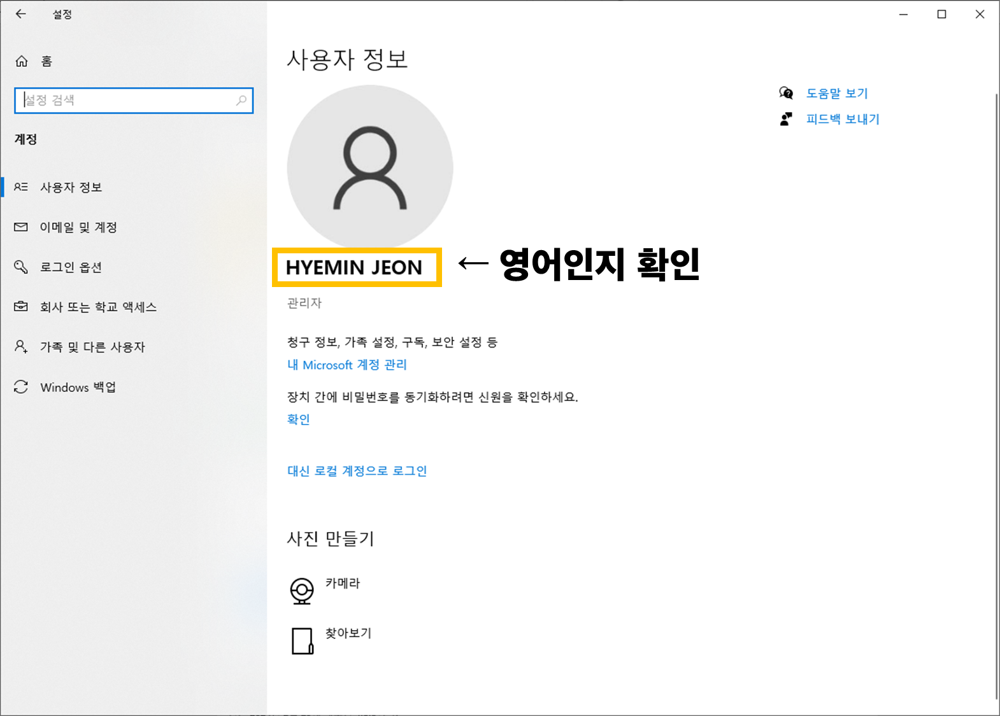
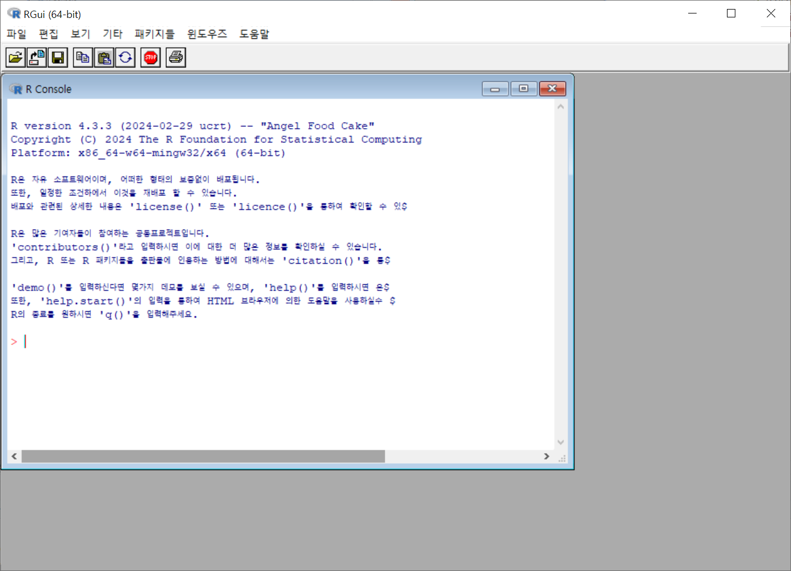
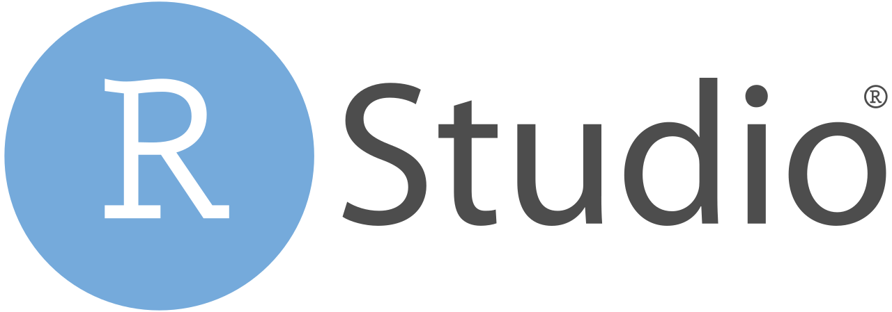
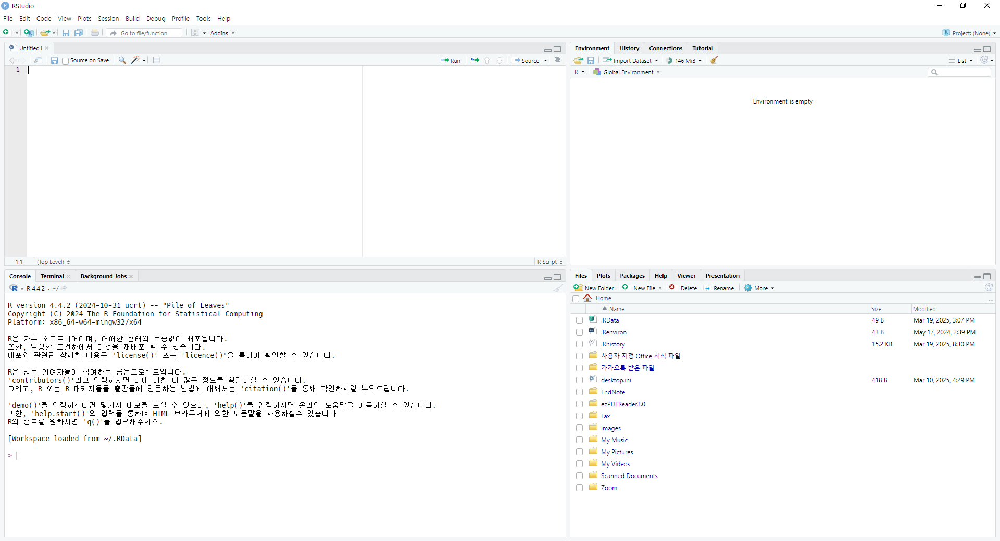
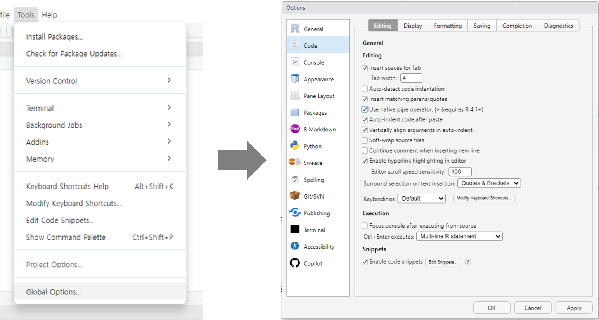

R & RStudio 설치
1 R 설치하기
R은 통계 계산과 데이터 시각화를 위한 오픈소스 프로그래밍 언어이다. 오픈 소스 언어이기 때문에 누구나 무료로 자유롭게 다운로드하고 사용할 수 있으며, 다양한 통계 및 머신러닝 알고리즘과 강력한 시각화 기능을 지원하고 있어 데이터 사이언티스트에게는 매우 유용한 언어이다.
R은 실행과정에서 폴더 경로에 한글이 포함된 경우 오류가 자주 발생한다. 따라서 폴더 경로에 한글이 들어가지 않도록 주의해야 한다. 운영체제로 Windows를 사용하는 경우 사용자 계정 이름이 한국어로 설정되어 있는 경우 반드시 영어로 변경해주어야 하며, Windows와 Mac 사용자 모두 앞으로 만들 프로젝트 폴더와 데이터, 스크립트 파일 이름을 영어로 설정하는 것을 추천한다.
- 사용자 계정 이름 확인: Windows 설정 > 계정 > 사용자 정보

- 만약 사용자 계정 이름이 한국어로 설정되어 있다면 영어로 된 새로운 윈도우 사용자 계정을 만들어야 함
R은 CRAN에 접속하여 본인의 운영체제와 최신 버전을 다운받을 수 있다. 하지만 실습 과정 중 사용할 Shiny 패키지의 호환성 문제로 4.3.3 이하 버전의 R을 사용하여야 한다. 따라서 카카오톡으로 전달드린 R 설치 파일을 실행하여 R 설치를 완료해주길 바란다. 별도의 옵션 수정 없이 ‘다음’ 버튼을 끝까지 누르면 된다.
설치가 완료된 R을 실행하면 아래와 같은 창이 뜰 것이다. 정상적으로 실행된다면 문제없이 R 설치가 완료된 것이다.

2 RStudio 설치하기

RStudio는 R 프로그래밍 언어를 위한 통합 개발 환경(Integrated Development Environment, IDE)의 하나로, R을 보다 효율적으로 활용할 수 있도록 다양한 기능을 제공한다. R을 사용할 수 있는 IDE는 다양하지만 대부분의 R 사용자들은 RStudio를 사용하고 있으며, 실습도 RStudio를 활용해 진행할 예정이므로 RStudio를 통해 R 프로그래밍을 하는 것을 권장한다.
RStudio를 설치하는 방법은 다음과 같다.
- https://posit.co/download/rstudio-desktop/에 접속하여 RStudio 설치파일 다운로드
- 설치파일 실행
- 설치 완료될 때까지 ‘다음’ 버튼 클릭
- 설치 완료

3 RStudio Global Option 설정하기
RStudio의 기본 설정을 이용해도 되지만 사용하다보면 사용자의 스타일에 맞게 옵션을 변경하고 싶을 때가 있다. 다음은 자주 사용하는 옵션 설정 방법이다. 만약 기본 설정이 마음에 든다면 굳이 변경하지 않아도 된다.
먼저 RStudio의 설정을 변경하고 싶다면 상단 메뉴바에서 Tools > Global Options…을 클릭한다. 아래와 같이 Options창이 뜨면 이곳에서 파이프 연산자, 테마, 폰트, 창 구성 등을 변경할 수 있다.
